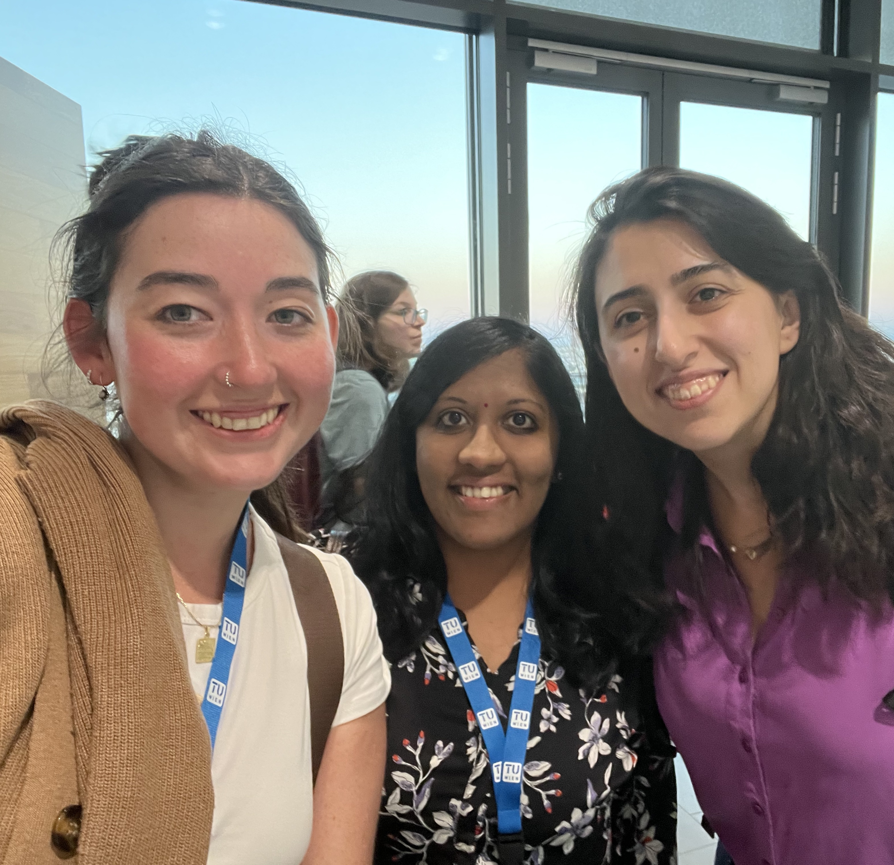
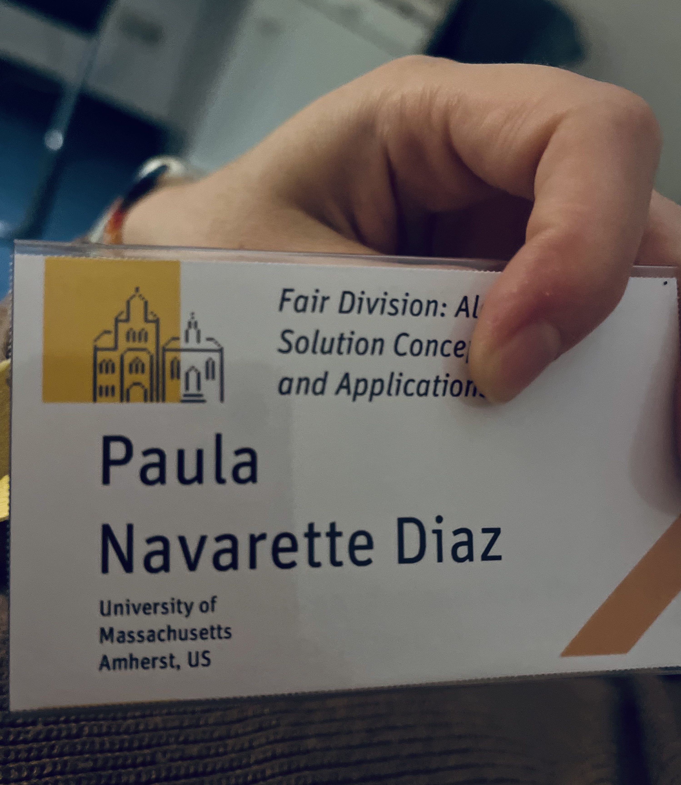
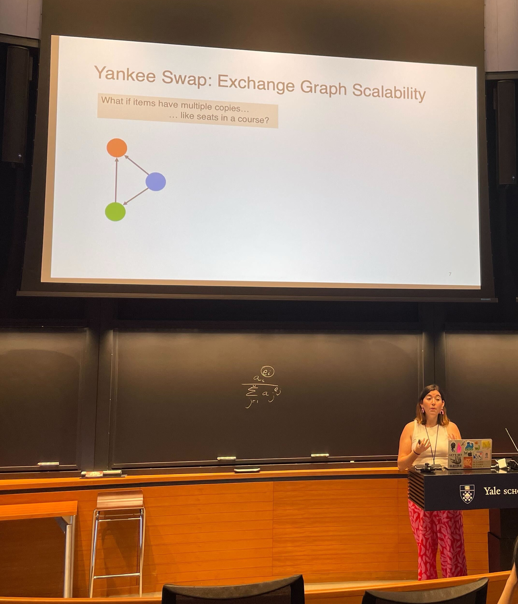
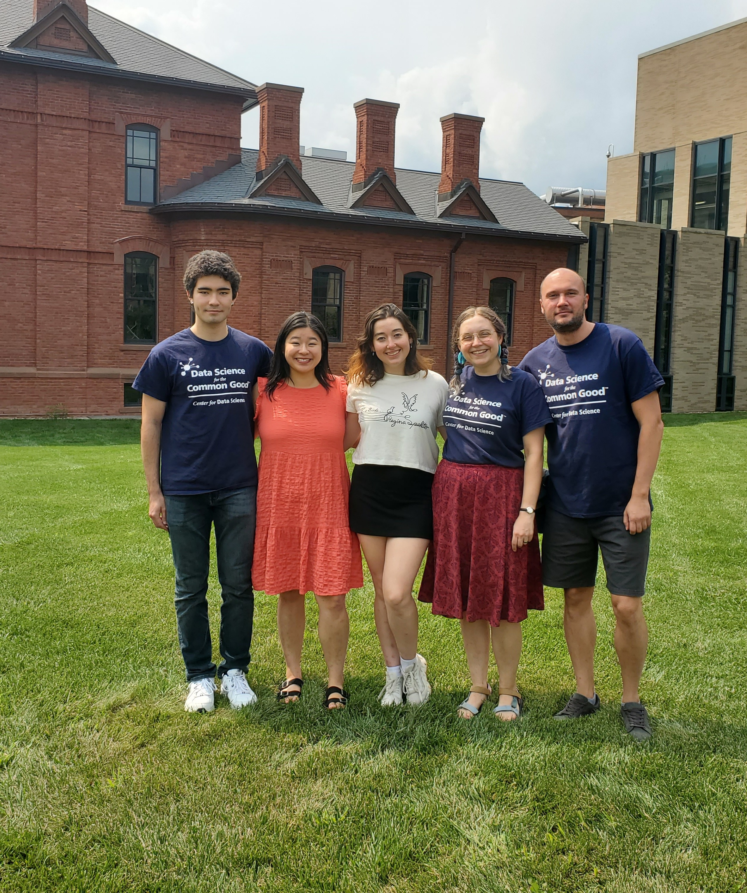
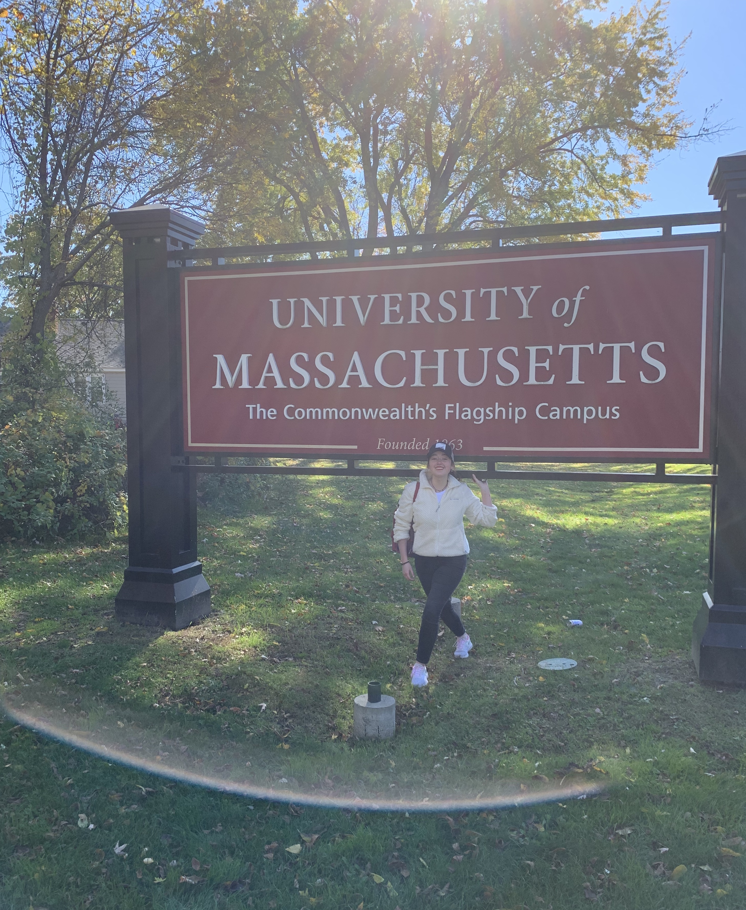
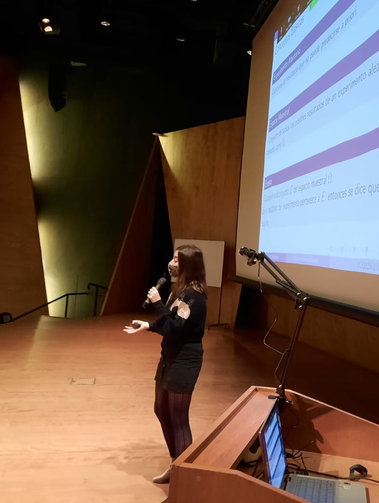
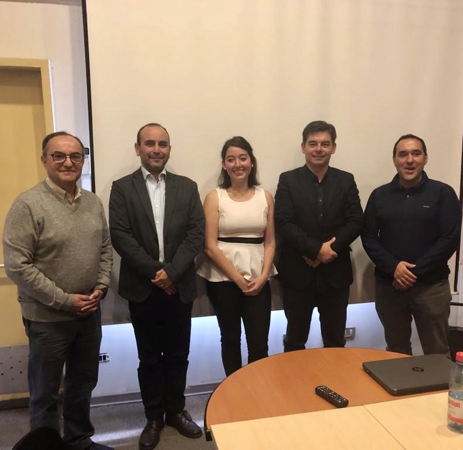
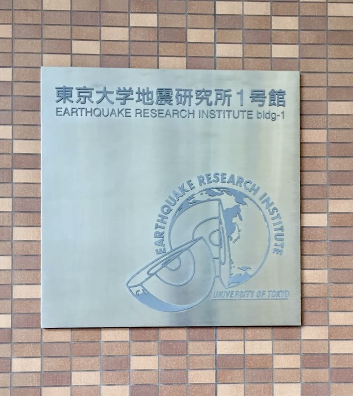

news
September 2025

Attended COMSOC 2025 at TU Vienna where I presented my work on Course Allocation
Summer 2025

Interned at Amazon!
Research Scientist Intern on the Grocery Science team in Seattle, WA

September 2024

Attended the Dagstuhl Seminar on Fair Division in Wadern, Germany
July 2024

Presented at the ACM Conference on Economics and Computation (EC'24), as one of two selected speakers at the Incentives of Academia Workshop!
Summer 2024

Data Science Intern at the DS4CG summer program, collaborating with the iNaturalist science team
September 2022

Started my PhD at UMass Amherst!
July 2022
Received PUC School of Engineering Letter of Recognition for Outstanding Teaching
December 2020

Awarded Most Inspiring Professor of the PUC Industrial and Systems Engineering Department
April 2019

Defended my Master's thesis!
November 2017
